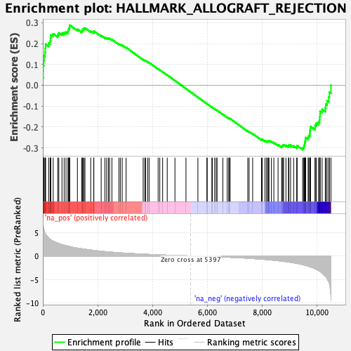
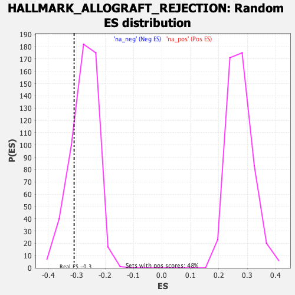

| Dataset | qlf.KOd4vsWTd4_gsea_score |
| Phenotype | NoPhenotypeAvailable |
| Upregulated in class | na_neg |
| GeneSet | HALLMARK_ALLOGRAFT_REJECTION |
| Enrichment Score (ES) | -0.30862528 |
| Normalized Enrichment Score (NES) | -1.1224711 |
| Nominal p-value | 0.20114942 |
| FDR q-value | 0.36546472 |
| FWER p-Value | 0.997 |

| SYMBOL | RANK IN GENE LIST | RANK METRIC SCORE | RUNNING ES | CORE ENRICHMENT | |
|---|---|---|---|---|---|
| 1 | CD86 | 0 | 8.166 | 0.0355 | No |
| 2 | NPM1 | 10 | 7.208 | 0.0659 | No |
| 3 | IRF8 | 13 | 6.580 | 0.0943 | No |
| 4 | CD74 | 33 | 5.807 | 0.1177 | No |
| 5 | IL18 | 43 | 5.543 | 0.1409 | No |
| 6 | GBP2 | 79 | 4.839 | 0.1586 | No |
| 7 | FGR | 88 | 4.757 | 0.1785 | No |
| 8 | IL2RA | 102 | 4.590 | 0.1972 | No |
| 9 | CCND2 | 217 | 3.831 | 0.2028 | No |
| 10 | EIF5A | 271 | 3.526 | 0.2130 | No |
| 11 | NME1 | 281 | 3.482 | 0.2273 | No |
| 12 | EIF3A | 293 | 3.450 | 0.2412 | No |
| 13 | CXCR3 | 379 | 3.153 | 0.2467 | No |
| 14 | ABCE1 | 543 | 2.772 | 0.2431 | No |
| 15 | EIF3D | 583 | 2.659 | 0.2509 | No |
| 16 | RIPK2 | 699 | 2.424 | 0.2504 | No |
| 17 | NCF4 | 778 | 2.285 | 0.2528 | No |
| 18 | BCAT1 | 845 | 2.199 | 0.2560 | No |
| 19 | GLMN | 921 | 2.104 | 0.2579 | No |
| 20 | UBE2N | 926 | 2.096 | 0.2666 | No |
| 21 | IFNG | 953 | 2.064 | 0.2731 | No |
| 22 | RPS9 | 975 | 2.022 | 0.2798 | No |
| 23 | CCND3 | 982 | 2.010 | 0.2880 | No |
| 24 | PTPN6 | 1261 | 1.665 | 0.2685 | No |
| 25 | IRF4 | 1416 | 1.525 | 0.2603 | No |
| 26 | MRPL3 | 1447 | 1.497 | 0.2639 | No |
| 27 | RPL9 | 1458 | 1.491 | 0.2694 | No |
| 28 | DEGS1 | 1498 | 1.456 | 0.2720 | No |
| 29 | SOCS5 | 1537 | 1.423 | 0.2745 | No |
| 30 | STAT1 | 1746 | 1.266 | 0.2600 | No |
| 31 | TNF | 1857 | 1.180 | 0.2545 | No |
| 32 | RPS19 | 1859 | 1.177 | 0.2595 | No |
| 33 | AKT1 | 2128 | 0.993 | 0.2380 | No |
| 34 | TGFB1 | 2265 | 0.915 | 0.2289 | No |
| 35 | IL12RB1 | 2329 | 0.882 | 0.2267 | No |
| 36 | CAPG | 2392 | 0.856 | 0.2244 | No |
| 37 | RPL39 | 2435 | 0.837 | 0.2240 | No |
| 38 | MTIF2 | 2519 | 0.792 | 0.2195 | No |
| 39 | GZMB | 2775 | 0.683 | 0.1979 | No |
| 40 | THY1 | 2826 | 0.660 | 0.1960 | No |
| 41 | IL2RB | 2894 | 0.629 | 0.1922 | No |
| 42 | PSMB10 | 3037 | 0.584 | 0.1811 | No |
| 43 | IL2 | 3659 | 0.380 | 0.1230 | No |
| 44 | GPR65 | 3717 | 0.365 | 0.1191 | No |
| 45 | ST8SIA4 | 3749 | 0.358 | 0.1177 | No |
| 46 | F2R | 3823 | 0.337 | 0.1121 | No |
| 47 | ICAM1 | 3876 | 0.323 | 0.1085 | No |
| 48 | LIF | 4205 | 0.240 | 0.0780 | No |
| 49 | B2M | 4265 | 0.223 | 0.0732 | No |
| 50 | MAP3K7 | 4369 | 0.203 | 0.0642 | No |
| 51 | CFP | 4537 | 0.159 | 0.0488 | No |
| 52 | TLR2 | 4818 | 0.103 | 0.0223 | No |
| 53 | CCL5 | 5220 | 0.032 | -0.0161 | No |
| 54 | CD40LG | 5655 | -0.039 | -0.0577 | No |
| 55 | IFNGR2 | 5984 | -0.094 | -0.0889 | No |
| 56 | EIF4G3 | 5994 | -0.096 | -0.0893 | No |
| 57 | WAS | 6165 | -0.127 | -0.1052 | No |
| 58 | CD79A | 6180 | -0.130 | -0.1059 | No |
| 59 | TRAF2 | 6266 | -0.148 | -0.1135 | No |
| 60 | CCL4 | 6321 | -0.159 | -0.1180 | No |
| 61 | GALNT1 | 6355 | -0.167 | -0.1204 | No |
| 62 | NCK1 | 6565 | -0.213 | -0.1396 | No |
| 63 | CSK | 6725 | -0.256 | -0.1538 | No |
| 64 | BRCA1 | 6780 | -0.268 | -0.1579 | No |
| 65 | CD3E | 6803 | -0.275 | -0.1588 | No |
| 66 | IL2RG | 6831 | -0.282 | -0.1602 | No |
| 67 | UBE2D1 | 7474 | -0.481 | -0.2199 | No |
| 68 | CTSS | 7522 | -0.501 | -0.2222 | No |
| 69 | ITGAL | 7652 | -0.552 | -0.2322 | No |
| 70 | ELF4 | 7972 | -0.682 | -0.2600 | No |
| 71 | IKBKB | 8000 | -0.692 | -0.2596 | No |
| 72 | IL4 | 8102 | -0.738 | -0.2661 | No |
| 73 | TLR6 | 8158 | -0.767 | -0.2680 | No |
| 74 | HCLS1 | 8200 | -0.788 | -0.2686 | No |
| 75 | ITK | 8224 | -0.802 | -0.2673 | No |
| 76 | ACVR2A | 8248 | -0.816 | -0.2660 | No |
| 77 | CD4 | 8336 | -0.860 | -0.2706 | No |
| 78 | CD3G | 8425 | -0.929 | -0.2750 | No |
| 79 | TPD52 | 8578 | -1.015 | -0.2852 | No |
| 80 | GCNT1 | 8710 | -1.095 | -0.2931 | No |
| 81 | LY75 | 8730 | -1.106 | -0.2901 | No |
| 82 | CCR2 | 8756 | -1.121 | -0.2877 | No |
| 83 | SOCS1 | 8781 | -1.131 | -0.2851 | No |
| 84 | LCK | 8866 | -1.214 | -0.2879 | No |
| 85 | TAPBP | 8956 | -1.279 | -0.2909 | No |
| 86 | TAP2 | 8975 | -1.296 | -0.2870 | No |
| 87 | ABI1 | 9035 | -1.340 | -0.2868 | No |
| 88 | LCP2 | 9146 | -1.453 | -0.2911 | No |
| 89 | ZAP70 | 9258 | -1.580 | -0.2949 | No |
| 90 | ITGB2 | 9274 | -1.590 | -0.2895 | No |
| 91 | BCL10 | 9474 | -1.839 | -0.3006 | Yes |
| 92 | LTB | 9517 | -1.902 | -0.2964 | Yes |
| 93 | CD96 | 9527 | -1.912 | -0.2890 | Yes |
| 94 | CD3D | 9548 | -1.961 | -0.2824 | Yes |
| 95 | TAP1 | 9554 | -1.969 | -0.2743 | Yes |
| 96 | IL16 | 9569 | -1.990 | -0.2670 | Yes |
| 97 | STAT4 | 9579 | -2.006 | -0.2592 | Yes |
| 98 | CD247 | 9582 | -2.010 | -0.2506 | Yes |
| 99 | CD7 | 9675 | -2.172 | -0.2500 | Yes |
| 100 | IL18RAP | 9696 | -2.208 | -0.2424 | Yes |
| 101 | CD47 | 9735 | -2.292 | -0.2361 | Yes |
| 102 | SIT1 | 9739 | -2.308 | -0.2263 | Yes |
| 103 | IL27RA | 9745 | -2.318 | -0.2168 | Yes |
| 104 | MAP4K1 | 9755 | -2.339 | -0.2075 | Yes |
| 105 | TRAT1 | 9758 | -2.346 | -0.1975 | Yes |
| 106 | IFNGR1 | 9928 | -2.711 | -0.2019 | Yes |
| 107 | SRGN | 9931 | -2.718 | -0.1903 | Yes |
| 108 | FLNA | 9974 | -2.849 | -0.1820 | Yes |
| 109 | PRKCB | 10053 | -3.078 | -0.1761 | Yes |
| 110 | PTPRC | 10093 | -3.226 | -0.1659 | Yes |
| 111 | BCL3 | 10100 | -3.255 | -0.1523 | Yes |
| 112 | JAK2 | 10109 | -3.287 | -0.1388 | Yes |
| 113 | CD2 | 10111 | -3.303 | -0.1246 | Yes |
| 114 | FAS | 10185 | -3.610 | -0.1159 | Yes |
| 115 | TLR1 | 10301 | -4.300 | -0.1083 | Yes |
| 116 | CD28 | 10320 | -4.441 | -0.0907 | Yes |
| 117 | HIF1A | 10367 | -4.786 | -0.0744 | Yes |
| 118 | ETS1 | 10427 | -5.458 | -0.0563 | Yes |
| 119 | IFNAR2 | 10449 | -5.816 | -0.0331 | Yes |
| 120 | IRF7 | 10507 | -8.903 | 0.0001 | Yes |
